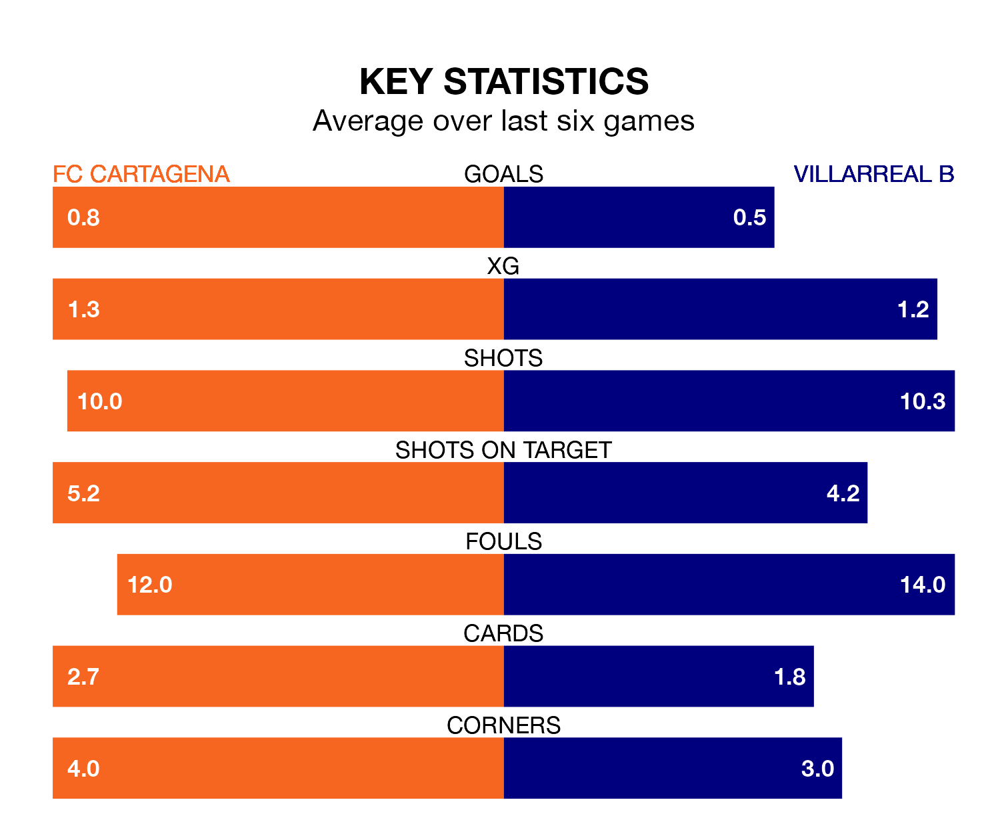

FC Cartagena host Villarreal B on Sunday at the Estadio Municipal Cartagonova in the Segunda División.
In their last league match, on December 21, Cartagena lost to SD Huesca 3-0 away.
Villarreal B drew, 1-1 at home against Real Oviedo, with Álex Forés Mendoza scoring their goals.
Cartagena are bottom of the table after 21 games, of which they have won three and drawn six, earning 15 points.
Villarreal B are five places ahead of FC Cartagena in 17th, with six wins and six draws putting them on 24 points.
In Forés Mendoza, the away side have one of the league's sharpest shooters so far this season. He has notched nine goals in 21 appearances, to sit third in the scoring charts.
His goal rate of one every 151 minutes is quicker than that of Alfredo Ortuño Martínez, the hosts' top scorer with a goal every 283 minutes, and a total of five goals in 19 games.
With 17 goals in 21 games so far this season, Cartagena are the league's second-lowest scorers with 0.8 goals per game. And they are conceding more than average, letting in 34 goals at a rate of 1.6 per game.
Villarreal B are also below average scorers, with 1.1 goals per game, compared to a league average of 1.2. They have conceded 1.4 goals per game.
In the last three years, Cartagena and Villarreal B have played each other on three occasions. Cartagena won one of them and Villarreal B the other.
Their last meeting was on September 2, when Cartagena won 2-1 away.
Cartagena are in mixed form in the Segunda División, with two wins and two draws from their last six games.
And also with two wins and two draws over that period, Villarreal B's form is identical – they have both taken eight points from 18.
Updated: 10:36, 03/01/24